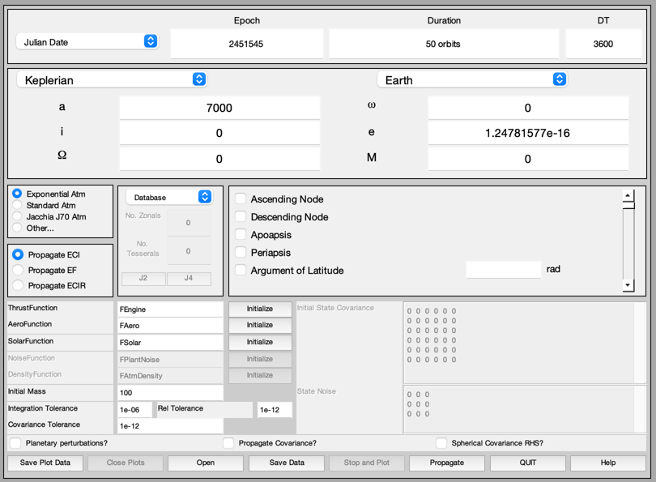
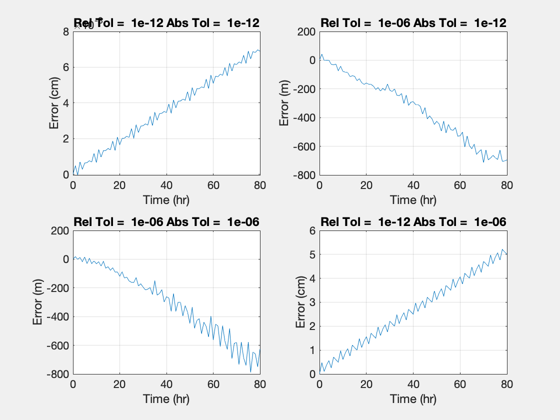

Integration Accuracy for PropagateOrbitPlugin.
Propagate a circular 7000 km orbit and look at various combinations of tolerance and relative tolerance. Loads OrbitIntegrationAccuracy.mat ------------------------------------------------------------------------ See also NewFig, Mag, PropagateOrbitPlugIn ------------------------------------------------------------------------
Contents
%------------------------------------------------------------------------------- % Copyright (c) 2000 Princeton Satellite Systems, Inc. All rights reserved. %------------------------------------------------------------------------------- d = load('OrbitIntegrationAccuracy.mat'); tag = PropagateOrbitPlugIn( 'initialize' ); d.relTol = 1.e-12; d.tol = 1.e-12; PropagateOrbitPlugIn( 'set data', tag, d ); tic PropagateOrbitPlugIn( 'propagate', tag ); time1212 = toc; r = PropagateOrbitPlugIn( 'get r', tag ); if( isempty(r) ) return; end error1212 = Mag(r) - 7000; PropagateOrbitPlugIn( 'close plots', tag ); d.relTol = 1.e-6; PropagateOrbitPlugIn( 'set data', tag, d ); tic PropagateOrbitPlugIn( 'propagate', tag ); time0612 = toc; r = PropagateOrbitPlugIn( 'get r', tag ); if( isempty(r) ) return; end error0612 = Mag(r) - 7000; PropagateOrbitPlugIn( 'close plots', tag ); d.tol = 1.e-6; PropagateOrbitPlugIn( 'set data', tag, d ); tic PropagateOrbitPlugIn( 'propagate', tag ); time0606 = toc; r = PropagateOrbitPlugIn( 'get r', tag ); if( isempty(r) ) return; end error0606 = Mag(r) - 7000; PropagateOrbitPlugIn( 'close plots', tag ); d.relTol = 1.e-12; PropagateOrbitPlugIn( 'set data', tag, d ); tic PropagateOrbitPlugIn( 'propagate', tag ); time1206 = toc; r = PropagateOrbitPlugIn( 'get r', tag ); if( isempty(r) ) return; end error1206 = Mag(r) - 7000; PropagateOrbitPlugIn( 'close plots', tag );
Generate the plots
%------------------- t = 0:(d.nSamp-1); fprintf('Time for Rel Tol = %6.0e Abs Tol = %6.0e is %12.4e\n',1e-12,1e-12,time1212) fprintf('Time for Rel Tol = %6.0e Abs Tol = %6.0e is %12.4e\n',1e-6, 1e-12,time0612) fprintf('Time for Rel Tol = %6.0e Abs Tol = %6.0e is %12.4e\n',1e-6, 1e-6, time0606) fprintf('Time for Rel Tol = %6.0e Abs Tol = %6.0e is %12.4e\n',1e-12,1e-6, time1206) NewFig('Orbit Integration Accuracy') subplot(2,2,1) plot( t(1:length(error1212)), error1212*1e5 ) xlabel('Time (hr)') ylabel('Error (cm)'); grid title(sprintf('Rel Tol = %6.0e Abs Tol = %6.0e',1e-12,1e-12)); subplot(2,2,2) plot( t(1:length(error0612)), error0612*1e3) xlabel('Time (hr)') ylabel('Error (m)'); grid title(sprintf('Rel Tol = %6.0e Abs Tol = %6.0e',1e-6,1e-12)); subplot(2,2,3) plot( t(1:length(error0606)), error0606*1e3 ) xlabel('Time (hr)') ylabel('Error (m)'); grid title(sprintf('Rel Tol = %6.0e Abs Tol = %6.0e',1e-6,1e-6)); subplot(2,2,4) plot( t(1:length(error1206)), error1206*1e5 ) xlabel('Time (hr)') ylabel('Error (cm)'); grid title(sprintf('Rel Tol = %6.0e Abs Tol = %6.0e',1e-12,1e-6));
Time for Rel Tol = 1e-12 Abs Tol = 1e-12 is 3.8459e+00 Time for Rel Tol = 1e-06 Abs Tol = 1e-12 is 2.8154e+00 Time for Rel Tol = 1e-06 Abs Tol = 1e-06 is 2.8272e+01 Time for Rel Tol = 1e-12 Abs Tol = 1e-06 is 2.9769e+00
Test for different sample intervals
%------------------------------------ d.relTol = 1.e-12; d.tol = 1.e-12; d.nSamp = 40; d.t = linspace(0,d.duration,d.nSamp); PropagateOrbitPlugIn( 'set data', tag, d ); tic PropagateOrbitPlugIn( 'propagate', tag ); time40 = toc; PropagateOrbitPlugIn( 'close plots', tag ); d.nSamp = 20; d.t = linspace(0,d.duration,d.nSamp); PropagateOrbitPlugIn( 'set data', tag, d ); tic PropagateOrbitPlugIn( 'propagate', tag ); time20 = toc; PropagateOrbitPlugIn( 'close plots', tag ); fprintf('Time for 81 samples %12.4e\n',time1212) fprintf('Time for 40 samples %12.4e\n',time40 ) fprintf('Time for 20 samples %12.4e\n',time20 ) %--------------------------------------
Time for 81 samples 3.8459e+00 Time for 40 samples 3.4690e+00 Time for 20 samples 4.3696e+00